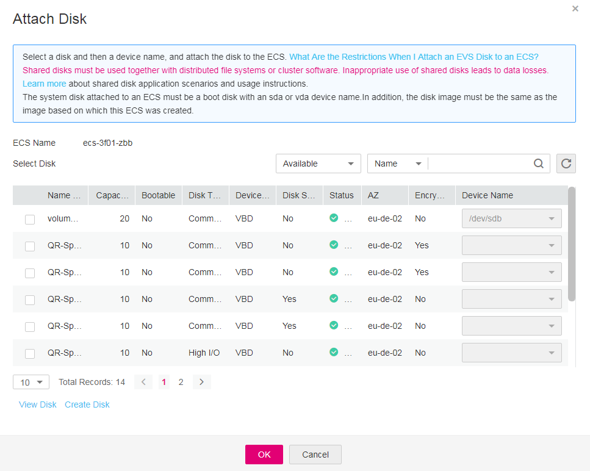
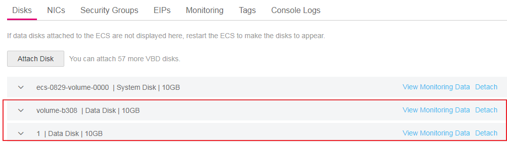

Scenarios
If the existing disks of an ECS fail to meet service requirements, for example, due to insufficient disk space or poor disk performance, you can attach more available EVS disks to the ECS, or create more disks (Storage > Elastic Volume Service) and attach them to the ECS.
Prerequisites
Procedure
- Log in to the management console.
- Click
 in the upper left corner and select your region and project.
in the upper left corner and select your region and project. - Under Computing, click Elastic Cloud Server.
- In the search box above the upper right corner of the ECS list, enter the ECS name, IP address, or ID for search.
- Click the name of the target ECS.
The page providing details about the ECS is displayed.
- Click the Disks tab. Then, click Attach Disk.
The Attach Disk dialog box is displayed.
Figure 1 Attach Disk
 - Select the target disk, specify the disk as the system disk or data disk.

- If no EVS disks are available, click Create Disk in the lower part of the list.
- For details about restrictions on attaching a disk, see What Are the Requirements for Attaching an EVS Disk to an ECS?
- The device names for the local disks and EVS disks mounted to a disk-intensive ECS comply with the following rules:
- System disk: Use sda or vda.
- Local disk: Use the device name following sda or vda in alphabetical order.
- EVS disk: Use the device name added in alphabetical order following those used by local disks.
- Click OK.
After the disk is attached, you can view the information about it on the Disks tab.
Figure 2 Viewing the newly attached disk

Follow-up Procedure
If the attached disk is newly created, the disk can be used only after it is initialized.
For instructions about how to initialize a data disk, see Scenarios and Disk Partitions.